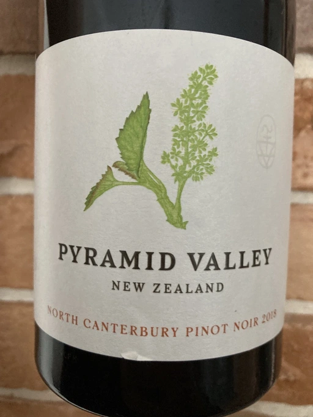

- Type
- Red Still, Dry
- Producer
- Pyramid Valley
- Vintage
- 2018
- Location
- New Zealand, North Canterbury
- Grapes
- Pinot Noir
- Alcohol
- 13
- Sugar
- 1
- Price
- 1250 UAH, 997 UAH
- Cellar
- N/A
Bright appearance with a ruby red hue.
Lifted floral nose with raspberry and cherry aromas, with an abundance of savoury/earthy complexity. The palate is vibrant with tension and length, showing a nice mixture of bright fruit/herbal elements and a savoury structure that North Canterbury is renowned for.
1088 cases of 6 x 750ml produced (6528 bottles).
A collection of appellation specific wines that show a unique stamp of their place and honour the Pyramid Valley philosophy of natural production techniques and wines that breathe of their place.
100% grower sourced Pinot Noir from Waipara, North Canterbury.
Ratings
2021-10-03 - 8.50
More ripe than their Pinot Noir from Central Otago of the same year. Nose is more complex and friendlier at the same time, featuring waffles with milk chocolate, blueberry, strawberry, red flowers, spices and wet forest floor. Almost light-bodied, almost perfectly balanced, with long delicious aftertaste with flavours of cola, underbrush and strawberry. Hard to predict its development, but it will definitely benefit from a year or two in cellar to round up tannin.
2022-10-05 - 8.00
Unique style, yet not for everyone. A (lonely) pickle went tripping in a flower field. Surely it met some friends from a famous book: marigold, dandelion, and chamomile. And what a story without antagonists? Spoiled forest berries (not ferries), wet earth and raw meat. In the end, it’s a medium-light, fresh and savoury wine with dry tannin (better than a year before). Tasty and sophisticated.